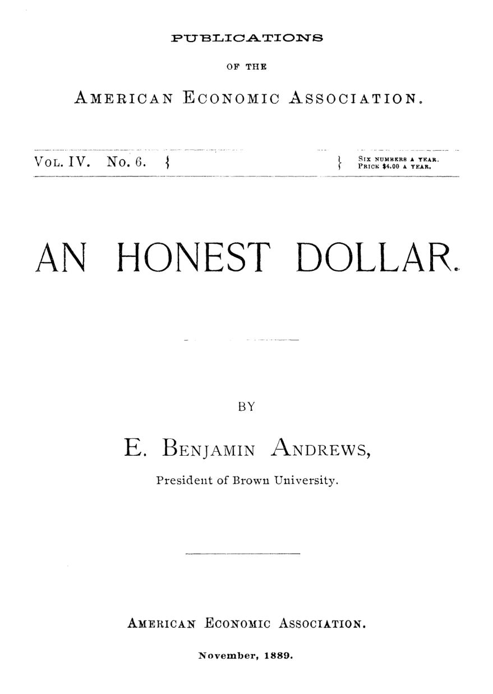

Um dólar honesto: a moeda que compra sempre o mesmo
Leitura: 8 min
Em 1889, o presidente da Brown University argumentou que nem o ouro garante uma moeda justa e propôs regular a quantidade de dinheiro guiado por um índice oficial de preços.


Em 1º de setembro de 1865, a dívida nacional dos Estados Unidos somava cerca de US$ 2,75 bilhões. Pela conta de E. Benjamin Andrews, presidente da Brown University, ela poderia ter sido quitada com 18 milhões de fardos de algodão. Anos depois, já reduzida a US$ 1,25 bilhão, exigiria 30 milhões de fardos.
Em dólares, a dívida encolhera cerca de 55%. Medida em algodão ou em ferro em barra, crescera uns 50%. O contribuinte pagava mais pagando menos. É essa anomalia que Andrews disseca em “An Honest Dollar”, trabalho lido na terceira reunião anual da American Economic Association, em Filadélfia, em 28 de dezembro de 1888, e publicado em novembro de 1889.
O que torna um dólar “honesto”?
Andrews parte de um ponto que, segundo ele, todos admitem: a moeda ideal tem poder de compra estável, isto é, a mesma quantia compra sempre a mesma quantidade de bens em geral. Se a moeda fosse só meio de troca, a estabilidade seria dispensável. Mas ela também mede valor, guarda riqueza e serve de padrão para pagamentos futuros. Nessas funções, qualquer oscilação transfere riqueza de uma parte para outra.
“O aumento do valor da moeda rouba os devedores.” (“Increase in the value of money robs debtors.”)
O devedor devolve o mesmo número de dólares, mas cada dólar vale mais do que na data do contrato. A queda do valor da moeda rouba o credor, no sentido inverso. Andrews condena as duas, mas acha piores os preços em queda: tornam lucrativo simplesmente reter dinheiro, que é entesourado em vez de circular, e a indústria se paralisa.
Daí a crítica à crença de que o dólar-ouro seria honesto por definição. Isso só valeria se o ouro nunca mudasse de valor, pretensão que nenhuma pessoa bem informada sustentaria. O padrão monetário, a regra ou o bem que define o valor da unidade de conta, não é honesto por ser metálico, mas por manter o poder de compra.
“Um dólar ideal compraria sempre exatamente a mesma quantidade de mercadoria em geral.” (“An ideal dollar would buy always precisely the same amount of general commodity.”)
Preço em queda não é sinal de progresso?
A objeção mais simpática dizia que a queda de preços refletia a técnica: produzir ficou mais barato, os preços caem, a civilização avança. Andrews atribui essa leitura ao alemão Barth e ao americano David A. Wells. Concorda que o barateamento dos custos é uma bênção, mas nega que os preços em dinheiro precisassem cair. Uma régua que fica fixa enquanto tudo muda é justamente uma régua defeituosa: sua credencial vinha da relação com as mercadorias em geral.
O ouro, além disso, é extraído sob rendimentos decrescentes: cada quantidade adicional custa mais. Já os manufaturados tendem a baratear indefinidamente. Deixada a si mesma, conclui Andrews, a moeda metálica tende a ganhar valor. Ele percorre Atenas, Roma, a Idade Média e a prata das Américas para mostrar que o poder de compra acompanha a oferta de metal, como as marés acompanham a lua: de modo imperfeito, mas constante.
Nos Estados Unidos, os preços caíram de 1809 a 1850, subiram até cerca de 1870 e voltaram a cair. A virada de 1873 ele atribui em parte à relativa escassez de ouro, mas sobretudo à desmonetização da prata, sua retirada do papel de moeda plena.
Por que não o bimetalismo?
Muitos contemporâneos buscavam estabilidade no bimetalismo internacional: ouro e prata circulando juntos, a uma razão legal fixa, nos principais países comerciais. Andrews é simpático à ideia e considera a prata uma medida de valor mais confiável que o ouro. O obstáculo é político: não vê esperança de uma aliança que exigiria recunhagem em escala tão vasta, e aponta a Grã-Bretanha como entrave.
Há um argumento mais fino. Em 1889, a maior parte das dívidas já não fora contratada aos preços altos de antes de 1873. Uma alta geral não corrigiria a injustiça passada; apenas a repetiria. Melhor aceitar o novo patamar de preços e impedir que ele mude outra vez, para cima ou para baixo. A volta da prata daria alívio parcial e temporário.
Como manter os preços parados?
A solução segue um plano do professor Walras, de Lausanne, e tem três peças: apuração oficial e criteriosa do curso dos preços; uma moeda subsidiária com curso legal pleno; e a injeção ou retirada dessa moeda conforme os preços caiam ou subam. Não se trata de indexar contratos, mas de regular a quantidade de dinheiro em circulação.
A primeira peça é um índice de preços. Andrews lista as exigências: produtos básicos idênticos a cada medição; bens sujeitos e não sujeitos a rendimentos decrescentes; os menos afetados por tarifas e clima; quanto mais itens, melhor; preços dos principais mercados; e pesos proporcionais ao consumo. Se o total sobe, há dinheiro demais e parte deve ser retirada. Se cai, falta dinheiro e mais deve ser emitido.
Walras pretendia prever e evitar as variações. Andrews se diz menos presunçoso: corrigiria depois de observá-las. Para expandir, o governo compraria prata, cunharia moedas-sinal e pagaria despesas com certificados correspondentes. Para contrair, venderia títulos resgatáveis nesses certificados. O ouro seguiria como única moeda de cunhagem livre; a prata viraria moeda reguladora, cunhada só quando necessário.
Por que não papel, mais barato? Porque o papel não é seguro sem lastro, e nada acalma tanto um pânico quanto a conversibilidade imediata em moeda forte. Pela mesma razão, Andrews rejeita duas variantes do professor Marshall: com o tempo, o papel sem cobertura cresceria sem parar.
Restam as objeções. Uma nação sozinha dificilmente sustentaria o arranjo; seria preciso concerto internacional, ainda que menos formal que um tratado. E havia a objeção decisiva para muitos: a dependência do Estado. A resposta é institucional. O trabalho caberia não ao Congresso, mas a uma comissão apartidária, nos moldes da Interstate Commerce Commission: o secretário do Tesouro, o diretor da Casa da Moeda e o Comptroller of the Currency, mais quatro nomeados pelo presidente, entre eles o melhor estatístico e o melhor banqueiro do país, com tudo exposto à crítica pública. A quem recusasse o plano só por depender do poder público, Andrews devolve a acusação.
“Deixo ao leitor julgar se o escrúpulo dele, e não minha proposta de reforma, revela o doutrinário.” (“his scruple, rather than my motion of reform, does not betray the doctrinaire”)
Na minha leitura
Na minha leitura, Andrews acerta no diagnóstico e antecipa o desenho. A ideia de que a moeda honesta é a de poder de compra estável, e não a de metal nobre, venceu o século seguinte. A comissão técnica, pública e apartidária lembra o que hoje chamamos de banco central com mandato. Notável é o ponto de partida: não a eficiência, mas a justiça entre devedor e credor.
O ponto fraco é a confiança na mecânica. Andrews supõe que a comissão erraria pouco. Medir preços e dosar a quantidade de moeda é mais difícil do que ele admite, e corrigir só depois de observar é agir sempre com atraso. O dilema que ele deixa segue aberto: regra simples e verificável, ou julgamento técnico com margem para erro?
Glossário
- Padrão monetário
- Regra ou bem (como o ouro) que define o valor da unidade de moeda.
- Poder de compra
- Quantidade de bens e serviços que uma unidade de moeda consegue comprar.
- Índice de preços
- Média ponderada dos preços de uma cesta fixa de bens, usada para medir o nível geral de preços.
- Bimetalismo
- Sistema em que ouro e prata circulam como moeda plena, a uma razão legal fixa entre eles.
- Desmonetização
- Retirada de um metal da função de moeda plena, como ocorreu com a prata a partir de 1873.
- Moeda-sinal
- Moeda cujo valor de face supera o valor do metal que contém; em inglês, token.
Fontes
- An Honest Dollar (pp. 7–50). JSTOR · Internet Archive (PDF)
- Sumário da edição no JSTOR: Publications of the American Economic Association, vol. 4, nº 6.
Documento em domínio público (EUA, publicado antes de 1931), via JSTOR Early Journal Content e Internet Archive. Resumo e comentário do autor deste site, sem afiliação com a American Economic Association. Encontrou um erro? Escreva: a correção é publicada no próprio texto, com data.
← Nº 21 · Malthus, Ricardo e os números: três lições de método Nº 23 · Japão, 1890: instituições modernas sobre uma economia feudal →